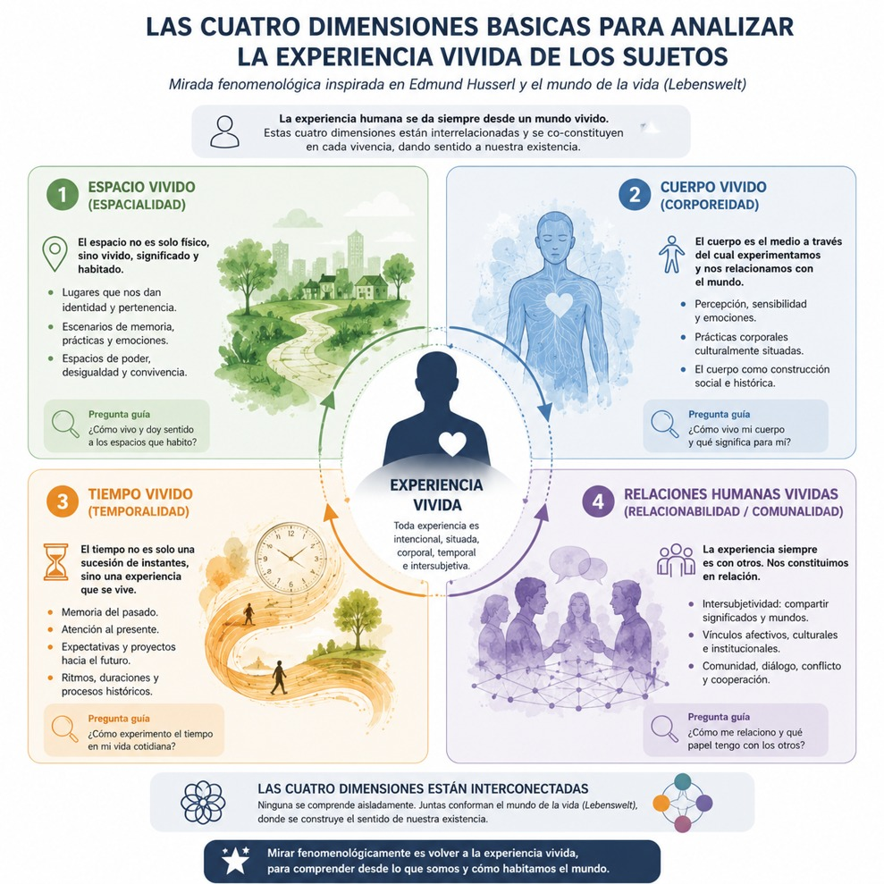
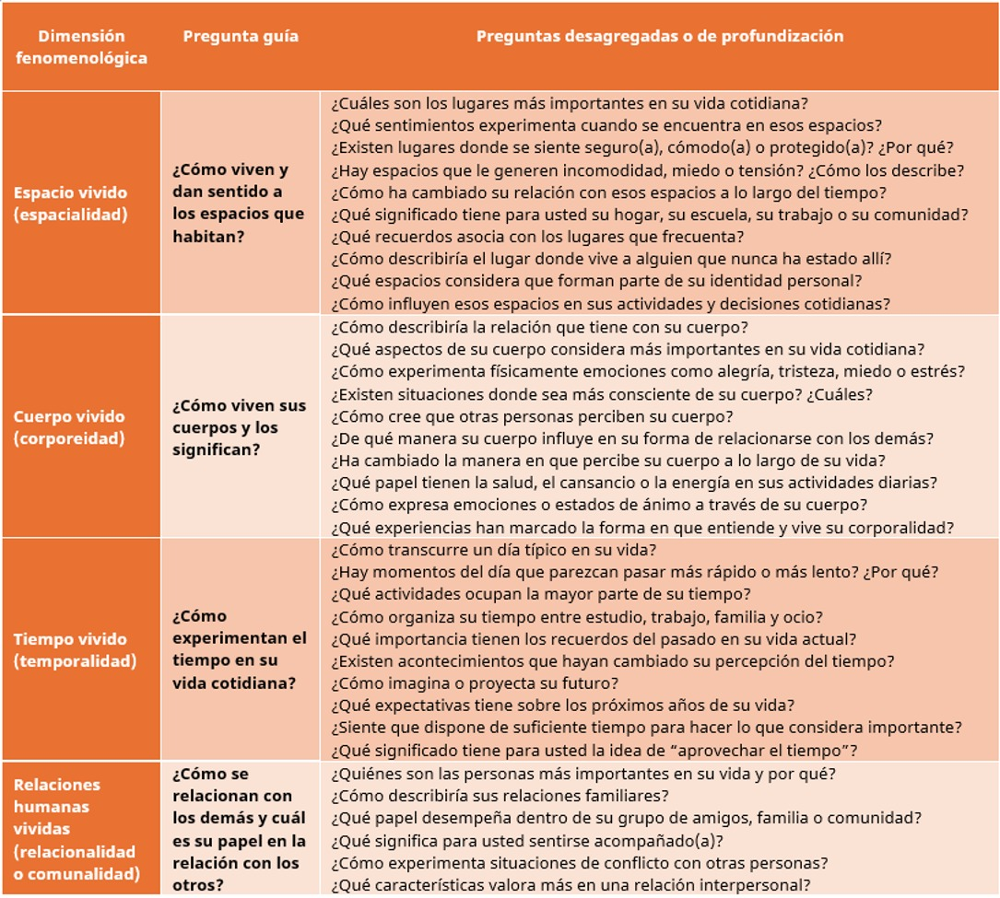

Fenomenología y realidad (E. Husserl)
La realidad social y humana se presenta ante nosotros como una trama de relaciones, experiencias, significados y procesos que difícilmente pueden explicarse desde perspectivas lineales o reduccionistas. Los fenómenos contemporáneos -desde las transformaciones culturales y tecnológicas hasta las crisis ambientales, políticas y sociales- muestran que la realidad está compuesta por múltiples dimensiones interdependientes que interactúan de manera simultánea. Esta condición ha llevado al desarrollo del paradigma de la complejidad, el cual propone comprender el mundo como una red dinámica de elementos en constante interacción, donde el orden, la incertidumbre, la emergencia y la interdependencia constituyen rasgos fundamentales.
Sin embargo, comprender la complejidad de la realidad no depende únicamente del análisis estructural de sistemas o procesos sociales, sino también de la manera en que los sujetos viven, perciben y significan el mundo. En este punto, la fenomenología de Edmund Husserl ofrece una base epistemológica fundamental para comprender que la realidad no se presenta como un objeto externo completamente dado, sino como una experiencia vivida, intencional y subjetivamente constituida. Husserl plantea que toda conciencia es conciencia de algo y que la comprensión del mundo parte de la experiencia originaria del sujeto en el Lebenswelt o “mundo de la vida”, entendido como el horizonte previo a toda abstracción científica o conceptual.
El paradigma de la complejidad, desarrollado por autores como Edgar Morin, sostiene que la realidad no puede comprenderse mediante la fragmentación disciplinaria ni mediante relaciones lineales de causa y efecto. Por el contrario, la realidad está constituida por sistemas abiertos, relaciones recursivas, retroalimentaciones y procesos emergentes. En este sentido, lo complejo implica reconocer que los fenómenos están interconectados y que cada elemento adquiere sentido en relación con otros.
Desde esta visión, la realidad humana no es estática ni uniforme. Está atravesada por dimensiones históricas, culturales, corporales, simbólicas y sociales que interactúan constantemente. Lo que una persona percibe como realidad está mediado por su historia, sus experiencias, sus relaciones y su contexto. Sin embargo, esta complejidad no puede comprenderse plenamente si se analiza exclusivamente desde estructuras externas. La complejidad también se manifiesta en la manera en que el sujeto experimenta y da sentido al mundo. Es precisamente aquí donde la fenomenología husserliana adquiere relevancia.
La realidad como conexión e interconexión de diversos agentes.
La fenomenología de Edmund Husserl surge como una crítica al positivismo y a las formas de conocimiento que reducen la realidad a hechos medibles o verificables. Husserl sostiene que antes de toda formulación científica existe un mundo previo, cotidiano y experiencial que constituye la base de todo conocimiento: el Lebenswelt o mundo de la vida.
Para Edmund Husserl el mundo de la vida representa el espacio de experiencias precategoriales, intersubjetivas y valorativas desde donde los sujetos construyen significado. Esto implica que la realidad no es simplemente algo externo que se observa, sino una experiencia que se vive, se interpreta y se comparte.
La fenomenología propone la epojé o suspensión de juicios previos para regresar a las cosas mismas, es decir, a la experiencia originaria tal como se presenta a la conciencia. Desde esta perspectiva, comprender la realidad compleja implica atender a la manera en que los sujetos viven el espacio, el tiempo, el cuerpo y la relación con los otros. Es importante señalar que el espacio, desde una perspectiva fenomenológica, no puede reducirse a una dimensión geométrica o física. El espacio es una experiencia vivida, cargada de significados, emociones y relaciones sociales.
Autores influenciados por Husserl, como Maurice Merleau-Ponty, sostienen que habitamos el mundo desde nuestra corporalidad, y que el espacio adquiere sentido a través de nuestras prácticas cotidianas. Una casa, una escuela, una calle o una comunidad no son únicamente lugares físicos; son escenarios de memoria, identidad, pertenencia y conflicto a una comunidad.
Desde el pensamiento complejo, el espacio vivido es una dimensión donde convergen múltiples relaciones: económicas, políticas, culturales y afectivas. Un mismo espacio puede representar seguridad para unas personas y exclusión para otras. Esto evidencia que la realidad espacial es plural, dinámica y situada. Comprender la complejidad del espacio vivido te permite reconocer que toda experiencia humana está territorializada y que el espacio social refleja relaciones de poder, desigualdad y convivencia.
Otra dimensión central de la fenomenología es el cuerpo vivido. El cuerpo no es únicamente un objeto biológico, sino el medio a través del cual nos relacionamos con el mundo. La experiencia corporal está mediada por emociones, percepciones, memorias y relaciones sociales. A través del cuerpo sentimos, habitamos, nos comunicamos y construimos identidad. El cuerpo es, por tanto, un espacio de experiencia compleja.
Desde la sociología contemporánea, el cuerpo también está atravesado por estructuras culturales y normativas. Género, clase social, etnicidad y edad influyen en la forma en que los cuerpos son percibidos y valorados socialmente. Desde una perspectiva fenomenológica, comprender el cuerpo vivido implica reconocer que nuestra percepción del mundo siempre es encarnada. No existe conciencia separada de la experiencia corporal. Esto nos permite entender que la realidad humana está profundamente vinculada con la experiencia sensible y corporal.
Uno de los aportes más importantes de Husserl fue su reflexión sobre la conciencia interna del tiempo, así que desarrolló una profunda reflexión sobre la temporalidad y la vida intencional, mostrando que el tiempo no es solo una sucesión objetiva de momentos, sino una experiencia subjetiva e histórica. Eso significa que vivimos el tiempo a través de la memoria, la expectativa y la atención al presente. Nuestra experiencia del tiempo está cargada de emociones, proyectos y significados.
Desde la complejidad, el tiempo vivido refleja la interacción entre historia personal y procesos sociales más amplios. Crisis económicas, cambios culturales, transformaciones tecnológicas o experiencias familiares modifican nuestra percepción temporal. Comprender el tiempo vivido permite reconocer que la realidad humana es procesual, cambiante y profundamente histórica.
Finalmente, la realidad compleja también se construye en la relación con los otros. Husserl, especialmente en su etapa tardía, profundizó en la noción de intersubjetividad, entendida como la experiencia compartida del mundo. En lo sucesivo la fenomenología permitió abrir un campo de estudio sobre la subjetividad y la intersubjetividad en las ciencias humanas, mostrando que la experiencia individual siempre está vinculada con otros sujetos y con sistemas de significación compartidos. De ese modo, podemos entender que las relaciones sociales configuran nuestra identidad, nuestros valores y nuestra percepción del mundo, y en ese sentido la familia, comunidad, instituciones y cultura forman parte de este entramado intersubjetivo.
Desde el pensamiento complejo, estas relaciones no son lineales, sino dinámicas y recursivas. Los individuos construyen la sociedad, pero también son moldeados por ella. Esta relación micro-macro permite comprender la naturaleza relacional de la existencia humana.
Es así como la fenomenología se centra en la experiencia personal; el mundo vivido y la experiencia vivida son elementos torales de este paradigma. El acercamiento a la realidad desde esta perspectiva permite comprender qué es lo que para la otra persona significa vivir en una situación determinada.
Metodológicamente la mirada fenomenológica puede enfocar la atención sobre cuatro existenciales básicos:
- 1. El espacio vivido (espacialidad)
- 2. El cuerpo vivido (corporeidad)
- 3. El tiempo vivido (temporalidad)
- 4. Y las relaciones humanas vividas (relacionabilidad o comunalidad)
- (Van Mennen citado por Merlino, 2009).
En síntesis, la realidad compleja no puede comprenderse únicamente como una suma de hechos objetivos o estructuras externas. Su verdadera complejidad se manifiesta en la experiencia vivida de los sujetos, en la manera en que habitan el espacio, experimentan su cuerpo, viven el tiempo y construyen relaciones sociales.
La fenomenología de Edmund Husserl ofrece una base epistemológica fundamental para comprender esta dimensión experiencial del mundo. A través del concepto de Lebenswelt, Husserl muestra que toda realidad parte del mundo de la vida, de la experiencia subjetiva e intersubjetiva que da sentido a nuestra existencia. Articular la fenomenología con el paradigma de la complejidad nos permite desarrollar una comprensión más profunda de la realidad social, reconociendo que el conocimiento no surge únicamente de la observación externa, sino de la reflexión crítica sobre las experiencias que configuran la vida cotidiana.
En un contexto marcado por incertidumbre, crisis y transformación permanente, esta articulación entre complejidad y fenomenología se convierte en una herramienta indispensable para comprender el mundo y para intervenir éticamente en él como te mostramos en el siguiente diagrama:

Las preguntas guías del diagrama también pueden ayudar a acercarte para conocer la experiencia vivida de los habitantes de tu comunidad preguntando:
¿Cómo viven y dan sentido a los espacios que habitan?
¿Cómo viven sus cuerpos y los significan?
¿Cómo experimentan el tiempo en su vida cotidiana?
¿Cómo se relacionan con los demás y cuál es su papel en la relación con los otros?
En la tabla te mostramos algunas preguntas desagregadas de cada una de ellas a manera de ejemplo sobre cómo podrías abordar a las personas de tu comunidad:

- Álvarez-Gayou (2009), Cómo hacer investigación cualitativa. Fundamentos y metodología. Planeación y presentación de un proyecto de investigación cualitativa. Barcelona, Buenos Aires, México: Paidós.
- Mansilla, Juan; Huaiquián Claudia; Vásquez Karina y Nogales-Bocio Antonia (2021). La fenomenología de Edmund Husserl como base epistemológica de los métodos cualitativos. Revista Notas Históricas y Geográficas, (26), 1-25.
- Merlino, A. (2009). Investigación Cualitativa en Ciencias Sociales. Buenos Aires, Argentina: Cengage Learning.